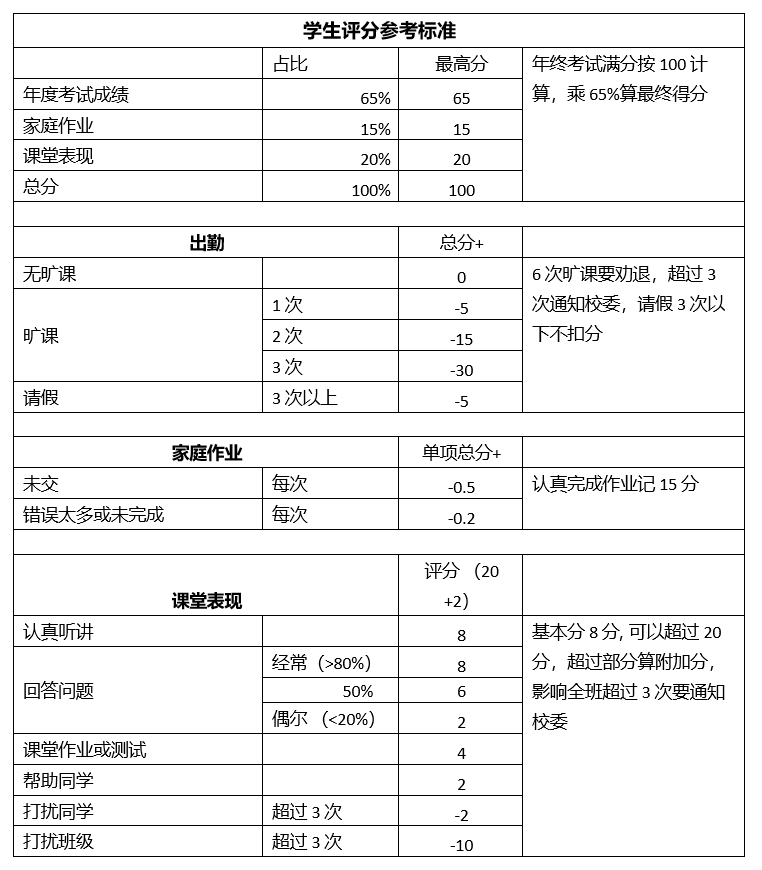

Criteria for selection of Best Student Award
At the end of each school year, all classes (except the activity classes and reception classes) will award a
few students for their outstanding performance throughout the year; there will also be one reward for best
progress and one reward for hard-working from each class.
- 1 outstanding student will be awarded if the number of the students of the class is less than 10;
- 2 outstanding students will be awarded if the number of the students of the class is less than 18;
- 3 outstanding students will be awarded for other classes
Please refer to the table below for the selection criteria. Each class may differ, check the class teacher for
specific criteria.
Please note:
- Those who missed classes without informing school twice or more will not receive the outstanding award;
- Students who are absent from school at the end of the year are deducted from the bonus and only reissued the
certificate.
- Small classes and interest classes do not award awards
- Students who participate in performances and competitions during the school year will have red envelopes at
the end of the year.
- If you can't come to school, parents should ask the class teacher for leave. Leave is not a class.
优秀学生评选
每一个学年，各个班级（兴趣班和Reception除外）都会在年底评选出若干优秀学生奖，1名进步奖，1名勤奋奖。
- 班级学生人数少于10人，评选1名优秀学生
- 班级学生人数少于18人，评选2名优秀学生
- 其他班级评选3名优秀学生
评选标准请参考下面表格，具体实施方法由各班老师决定, 如果有兴趣，可以向各班老师询问细节。
- 旷课两次以上者不能得优秀奖。
- 年终发奖时旷课的同学扣除奖金，只补发奖状。
- 小班和兴趣班不参与评奖。
- 学年期间参加演出和比赛的同学年终会有红包。
- 如果不能来学校上课，家长要向班级老师请假。
- 不请假算做旷课。旷课六次学生会被劝退。
